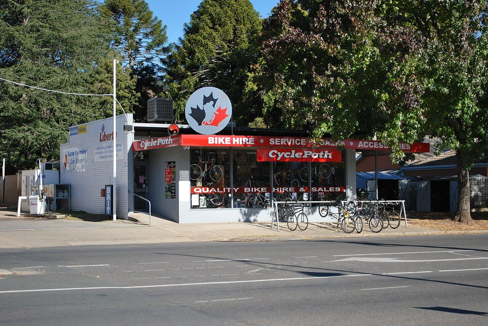
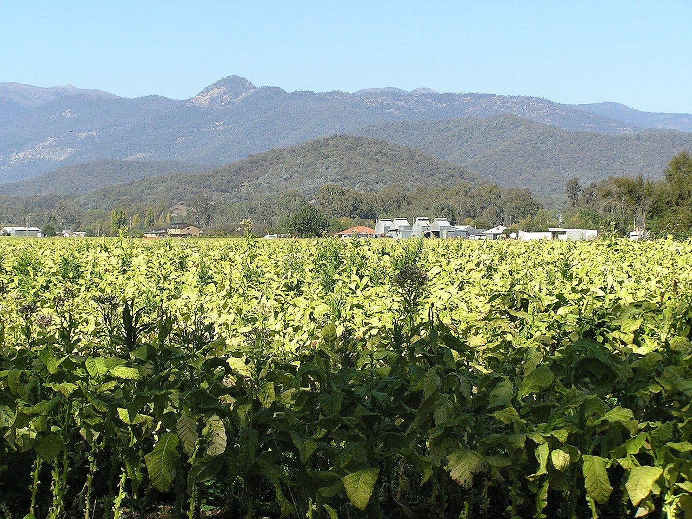
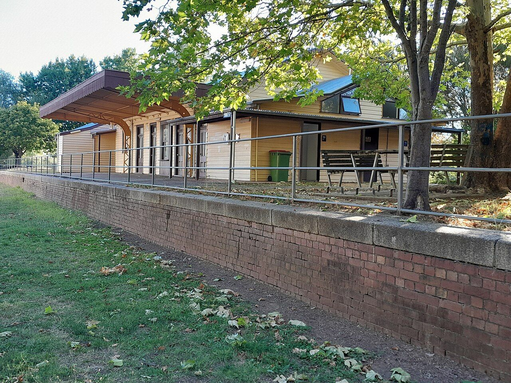

The Murray to Mountains Rail Trail follows an old railway line through the valley, and it passes our front gate. You can be riding within a minute of leaving your cottage.
What it is
It's a sealed, off-road path shared by cyclists and walkers. Because it was built for trains, the gradients are gentle, so it suits children, e-bikes and anyone who hasn't ridden for a while.
The trail links Bright, Beechworth and Wangaratta, with Porepunkah near the Bright end. The section from Wangaratta to Bright alone is 83 km. You don't need to ride far to enjoy it: the stretch into Bright is the one most of our guests do.

Getting on it from here
Walk or ride out of our front gate and cross the Great Alpine Road. Turn right for Bright, or left for Myrtleford and the rest of the valley.
We have bike storage on site, so you can bring your own and leave them safely overnight. If you'd rather hire, there are bike and e-bike hire shops in Bright.

Into Bright
From Porepunkah it's 6 km into Bright, beside the river and through farmland. Near Porepunkah, look out for the Colour Bridge, a new artwork at Roberts Creek. The trail ends at the old Bright railway station, where the historical society runs a small museum on weekend afternoons from September to May. From there, the shops, cafés and Centenary Park are a short walk away.

Down the valley
Turn left at our gate for a longer day. It's about 24 km from Porepunkah to Myrtleford, through Happy Valley, with Mount Buffalo behind you most of the way. Myrtleford has cafés for lunch, and a farmers market on the fourth Saturday of the month. Keen riders can carry on towards Beechworth and Wangaratta.


When to go
Autumn is the favourite, when the trees along the trail turn. Spring is mild and green. In summer, go early and be back at the river by lunchtime. Winter mornings are cold but clear.
Useful links
- Murray to Mountains Rail Trail, Victoria's High Country: maps and sections
- Visit Bright Cycle Guide (PDF), with distances for every stretch
- Cyclepath and Bright Electric Bikes, for bike hire
- More rides in our cycling guide.


.jpg){kind=link}